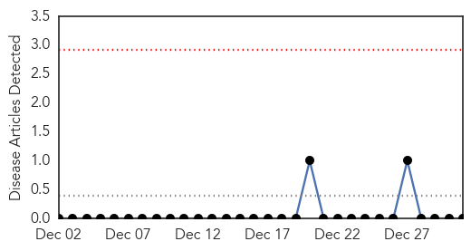
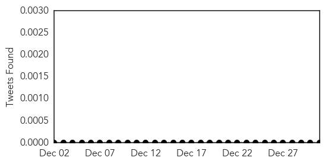
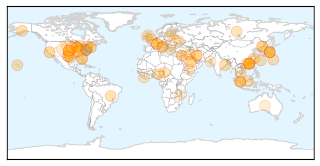
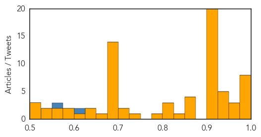

Hemmorhagic Fever
30-Day Web Trend
0 alerts, 0 warnings

30-Day Twitter Trend
0 alerts, 0 warnings

Article Locations

Article Confidences

Top Articles:
-
No articles found for Dec 31, 2014
Top Tweets:
-
No tweets found for Dec 31, 2014
Unknown
30-Day Web Trend
0 alerts, 0 warnings

30-Day Twitter Trend
0 alerts, 0 warnings

Article Locations
Article Confidences
Top Articles:
- 0.999
- 2 Tri-State children among flu deaths as cases soar
- 0.998
- Jaundice spreads to Kendrapara, Keonjhar in Odisha
- 0.997
- Spike in flu cases reported across Iowa
- 0.992
- Health Officials: 9 Oklahomans die of the flu, hundreds hospitalized
- 0.987
- Flu season shaping up to be brutal
- 0.983
- 22 affected by jaundice in Kendrapara
- 0.980
- 15,000 chickens culled amid bird flu alert
- 0.977
- Give yourself the gift of flu protection after the holidays
- 0.975
- Watching out for flu
- 0.972
- Hong Kong culls 15,000 chickens amid bird flu alert
- 0.961
- H7N9 case sparks chicken culling - Regional
- 0.946
- Hong Kong Culls 15,000 Chickens, 6 People Infected In China
- 0.929
- If you had chickenpox as a kid, watch out for shingles
- 0.928
- Another Tri-State hospital restricts visitors due to flu
- 0.927
- Hong Kong Culls 19,000 Chickens amid Bird Flu Alert — Naharnet
- 0.926
- Hong Kong culls 19,000 birds amid avian flu alert
- 0.917
- Chicago Tribune
- 0.917
- Chicago Tribune
- 0.917
- Chicago Tribune
- 0.917
- Chicago Tribune
- 0.917
- Chicago Tribune
- 0.917
- Chicago Tribune
- 0.917
- Chicago Tribune
- 0.917
- Chicago Tribune
- 0.917
- Chicago Tribune
- 0.917
- Chicago Tribune
- 0.917
- Chicago Tribune
- 0.917
- Chicago Tribune
- 0.917
- Chicago Tribune
- 0.917
- Chicago Tribune
- 0.917
- Chicago Tribune
- 0.917
- Chicago Tribune
- 0.917
- Chicago Tribune
- 0.917
- Chicago Tribune
- 0.911
- PEDv spreads in Hawaii
- 0.900
- Hong Kong reports imported human rabies death, 1st case in 13 years
- 0.866
- Palestinians to deliver newly signed treaty instruments to UN on Wednesday
- 0.866
- U.S.-led forces launch 10 air strikes in Syria, Iraq
- 0.866
- Gambia President Jammeh arrives back in capital -official sources
- 0.855
- South Korea to disinfect farms as foot-and-mouth, bird flu spread, Others news, Health News, AsiaOne YourHealth
- 0.850
- South Korea to disinfect farms as foot-and-mouth, bird flu spread
- 0.822
- Hong Kong culls 19,000 birds amid H7N9 flu alert
- 0.822
- Avian flu virus spreading in Asia
- 0.819
- Belarus suspends pork imports from Russia's Oryol Oblast
- 0.778
- Kaiser Permanente Hospital Patient Diagnosed With Tuberculosis In Riverside « CBS Los Angeles
- 0.745
- Outbreak of listeria tied to caramel apples grows to at least 32
- 0.721
- Hasbro doctor answers enterovirus questions
- 0.702
- Zille reshuffles her Cabinet
- 0.696
- Officials: Flu widespread across Rhode Island
- 0.685
- Sex and art scandals: Have the French gone soft?
Showing top 50 articles...
Top Tweets:
- 0.815
- Is the stomach flu really the flu? No, flu is a contagious respiratory illness. Learn more: http://t.co/Xh7enl1Qoe
- 0.732
- Clínicas garantiza Servicios de Urgencias en fin de año: El Hospital de Clínicas de la Facultad de Ciencias Mé... http://t.co/Q6ZwR0rszx
- 0.706
- Niño de 2 años mata accidentalmente de un tiro a una mujer en EEUU: Un niño de dos años mató este martes a u... http://t.co/xVvHj4EnnY
- 0.554
- how about a Scrubs themed virus? Dr, Cox-ackie Virus! Wait that doesn't work ...